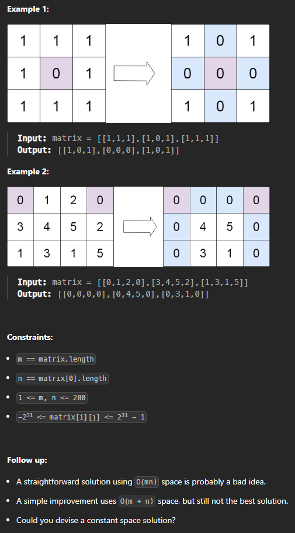

Отработка
Отработка ЛР1
3Sum
Given an integer array nums, return all the triplets [nums[i], nums[j], nums[k]] such that i != j, i != k, and j != k, and nums[i] + nums[j] + nums[k] == 0.
Notice that the solution set must not contain duplicate triplets.
Решение
class Solution:
def threeSum(self, nums: List[int]) -> List[List[int]]:
nums.sort()
result = []
n = len(nums)
for i in range(n):
if i > 0 and nums[i] == nums[i - 1]:
continue
left, right = i + 1, n - 1
while left < right:
total = nums[i] + nums[left] + nums[right]
if total == 0:
result.append([nums[i], nums[left], nums[right]])
while left < right and nums[left] == nums[left + 1]:
left += 1
while left < right and nums[right] == nums[right - 1]:
right -= 1
left += 1
right -= 1
elif total < 0:
left += 1
else:
right -= 1
return result
Add Two Numbers
You are given two non-empty linked lists representing two non-negative integers. The digits are stored in reverse order, and each of their nodes contains a single digit. Add the two numbers and return the sum as a linked list.
You may assume the two numbers do not contain any leading zero, except the number 0 itself.
Решение
# Definition for singly-linked list.
# class ListNode:
# def __init__(self, val=0, next=None):
# self.val = val
# self.next = next
class Solution:
def addTwoNumbers(self, l1: ListNode, l2: ListNode) -> ListNode:
dummy_head = ListNode(0)
current = dummy_head
carry = 0
while l1 or l2 or carry:
val1 = l1.val if l1 else 0
val2 = l2.val if l2 else 0
total_sum = val1 + val2 + carry
carry = total_sum // 10
new_digit = total_sum % 10
current.next = ListNode(new_digit)
current = current.next
if l1:
l1 = l1.next
if l2:
l2 = l2.next
return dummy_head.next
Binary Tree Inorder Traversal
Given the root of a binary tree, return the inorder traversal of its nodes' values.
Решение
# Definition for a binary tree node.
# class TreeNode:
# def __init__(self, val=0, left=None, right=None):
# self.val = val
# self.left = left
# self.right = right
from typing import Optional, List
class Solution:
def inorderTraversal(self, root: Optional[TreeNode]) -> List[int]:
result = []
self._inorder_helper(root, result)
return result
def _inorder_helper(self, node: Optional[TreeNode], result: List[int]):
if node:
self._inorder_helper(node.left, result)
result.append(node.val)
self._inorder_helper(node.right, result)
Binary Tree Zigzag Level Order Traversal
Given the root of a binary tree, return the zigzag level order traversal of its nodes' values. (i.e., from left to right, then right to left for the next level and alternate between).
Решение
# Definition for a binary tree node.
# class TreeNode:
# def __init__(self, val=0, left=None, right=None):
# self.val = val
# self.left = left
# self.right = right
from typing import Optional, List
from collections import deque
class Solution:
def zigzagLevelOrder(self, root: Optional[TreeNode]) -> List[List[int]]:
if not root:
return []
results = []
queue = deque([root])
left_to_right = True
while queue:
level_size = len(queue)
level = deque()
for _ in range(level_size):
node = queue.popleft()
if left_to_right:
level.append(node.val)
else:
level.appendleft(node.val)
if node.left:
queue.append(node.left)
if node.right:
queue.append(node.right)
results.append(list(level))
left_to_right = not left_to_right
return results
Отработка ЛР2
Set Matrix Zeroes
Given an m x n integer matrix matrix, if an element is 0, set its entire row and column to 0's.
You must do it in place.

Решение
from typing import List
class Solution:
def setZeroes(self, matrix: List[List[int]]) -> None:
"""
Do not return anything, modify matrix in-place instead.
"""
if not matrix:
return
rows, cols = len(matrix), len(matrix[0])
first_row_has_zero = False
first_col_has_zero = False
for j in range(cols):
if matrix[0][j] == 0:
first_row_has_zero = True
break
for i in range(rows):
if matrix[i][0] == 0:
first_col_has_zero = True
break
for i in range(1, rows):
for j in range(1, cols):
if matrix[i][j] == 0:
matrix[i][0] = 0
matrix[0][j] = 0
for i in range(1, rows):
for j in range(1, cols):
if matrix[i][0] == 0 or matrix[0][j] == 0:
matrix[i][j] = 0
if first_row_has_zero:
for j in range(cols):
matrix[0][j] = 0
if first_col_has_zero:
for i in range(rows):
matrix[i][0] = 0
Odd Even Linked List
Given the head of a singly linked list, group all the nodes with odd indices together followed by the nodes with even indices, and return the reordered list.
The first node is considered odd, and the second node is even, and so on.
Note that the relative order inside both the even and odd groups should remain as it was in the input.
You must solve the problem in O(1) extra space complexity and O(n) time complexity.
Решение
# Definition for singly-linked list.
# class ListNode:
# def __init__(self, val=0, next=None):
# self.val = val
# self.next = next
class Solution:
def oddEvenList(self, head: ListNode) -> ListNode:
if not head or not head.next:
return head
odd = head
even = head.next
even_head = even
while even and even.next:
odd.next = odd.next.next
even.next = even.next.next
odd = odd.next
even = even.next
odd.next = even_head
return head
Construct Binary Tree from Preorder and Inorder Traversal
Given two integer arrays preorder and inorder where preorder is the preorder traversal of a binary tree and inorder is the inorder traversal of the same tree, construct and return the binary tree.
Решение
# Definition for a binary tree node.
# class TreeNode:
# def __init__(self, val=0, left=None, right=None):
# self.val = val
# self.left = left
# self.right = right
class Solution:
def buildTree(self, preorder: List[int], inorder: List[int]) -> Optional[TreeNode]:
if not preorder or not inorder:
return None
inorder_index_map = {value: index for index, value in enumerate(inorder)}
def build_subtree(preorder_start, preorder_end, inorder_start, inorder_end):
if preorder_start > preorder_end or inorder_start > inorder_end:
return None
root_value = preorder[preorder_start]
root = TreeNode(root_value)
inorder_root_index = inorder_index_map[root_value]
left_subtree_size = inorder_root_index - inorder_start
root.left = build_subtree(preorder_start + 1, preorder_start + left_subtree_size, inorder_start, inorder_root_index - 1)
root.right = build_subtree(preorder_start + left_subtree_size + 1, preorder_end, inorder_root_index + 1, inorder_end)
return root
return build_subtree(0, len(preorder) - 1, 0, len(inorder) - 1)
Letter Combinations of a Phone Number
Given a string containing digits from 2-9 inclusive, return all possible letter combinations that the number could represent. Return the answer in any order.
A mapping of digits to letters (just like on the telephone buttons) is given below. Note that 1 does not map to any letters.
Решение
class Solution:
def letterCombinations(self, digits: str) -> List[str]:
if not digits:
return []
phone_map = {
'2': 'abc', '3': 'def', '4': 'ghi', '5': 'jkl',
'6': 'mno', '7': 'pqrs', '8': 'tuv', '9': 'wxyz'
}
result = []
def backtrack(index: int, current_combination: str):
if index == len(digits):
result.append(current_combination)
return
current_digit = digits[index]
for letter in phone_map[current_digit]:
backtrack(index + 1, current_combination + letter)
backtrack(0, "")
return result
Отработка ЛР3
Sort Colors
Given an array nums with n objects colored red, white, or blue, sort them in-place so that objects of the same color are adjacent, with the colors in the order red, white, and blue.
We will use the integers 0, 1, and 2 to represent the color red, white, and blue, respectively.
You must solve this problem without using the library's sort function.
Решение
from typing import List
class Solution:
def sortColors(self, nums: List[int]) -> None:
"""
Do not return anything, modify nums in-place instead.
"""
low, mid, high = 0, 0, len(nums) - 1
while mid <= high:
if nums[mid] == 0:
nums[low], nums[mid] = nums[mid], nums[low]
low += 1
mid += 1
elif nums[mid] == 1:
mid += 1
else:
nums[high], nums[mid] = nums[mid], nums[high]
high -= 1
Top K Frequent Elements
Given an integer array nums and an integer k, return the k most frequent elements. You may return the answer in any order.
Решение
from typing import List
import heapq
from collections import Counter
class Solution:
def topKFrequent(self, nums: List[int], k: int) -> List[int]:
count = Counter(nums)
heap = []
for num, freq in count.items():
heapq.heappush(heap, (freq, num))
if len(heap) > k:
heapq.heappop(heap)
return [num for freq, num in heap]